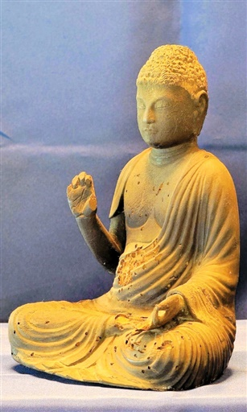
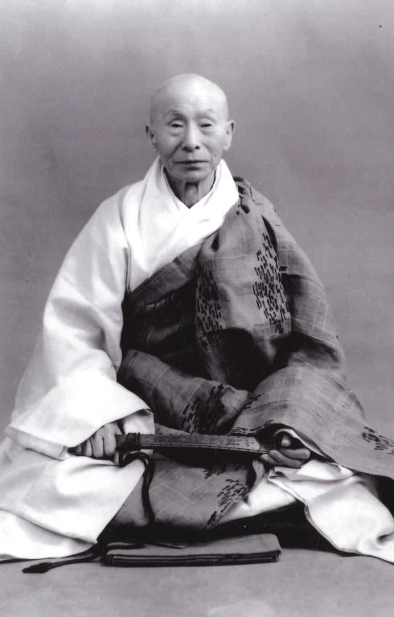
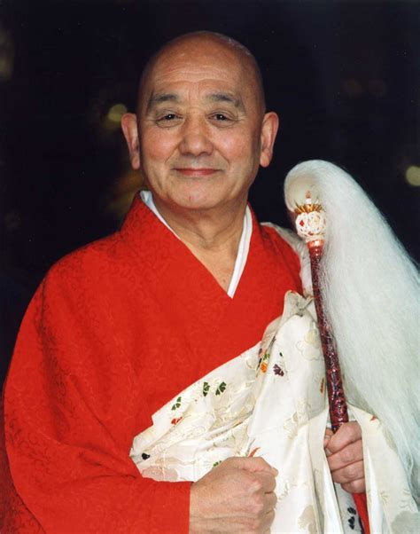
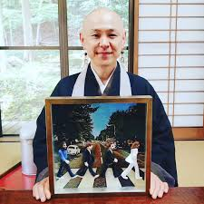
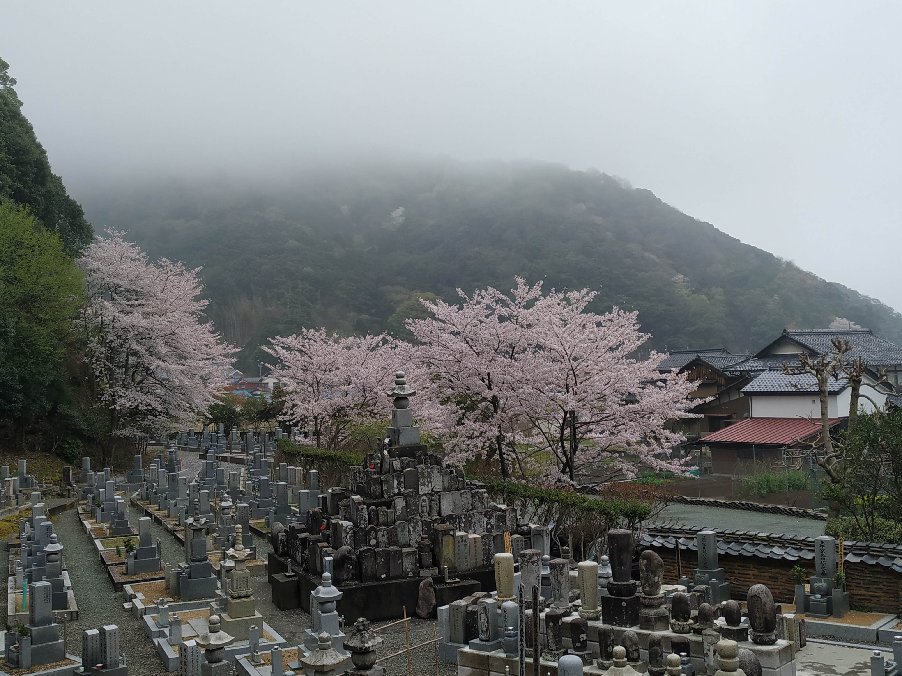

概要
福應山佛國寺は、福井県小浜市に所在する曹洞宗の禅寺である。文亀二年（1502年）、若州武田家第五代当主・武田元信公によって、父君の菩提を弔うために創建（または再興）された。開山は順應慶随大和尚である。
伝承によれば、慶随大和尚は中国や朝鮮半島を巡錫する中で、慶州の名刹・ブルグクサ寺（佛国寺）に深い感銘を受け、その名にちなみ「佛國寺」と号したという。「佛國寺」とは「仏の国の寺」を意味し、朝鮮仏教との霊的なつながりを象徴している。現在も境内には、開基・武田元信公の五輪塔が残され、往時の面影を今に伝えている。

平安時代中期の木造阿弥陀如来坐像（文化財）
また、佛國寺の起源はさらに古い時代にまで遡る可能性がある。令和七年（2025年）、小浜市は当寺所蔵の木造阿弥陀如来坐像を文化財に指定した。この像は一本の杉材から彫り出され、平安時代中期（950〜1000年頃）の作とされる。このことは、少なくとも10世紀にはこの地に寺院が存在していたことを示唆しており、武田元信公による文亀二年の建立は、古寺の復興と家の菩提寺としての整備であったことがうかがえる。
佛國寺は若州武田家の菩提寺としても知られる。元信公自身が当寺に葬られ、その法名は「佛國寺殿」で始まる。同時代の史料にも「元信公の墓は小浜の佛國寺にあり」と記され、この伝承を裏付けている。境内には五輪塔をはじめ、平安期の阿弥陀如来坐像など、地域の仏教文化を今に伝える遺構が点在している。
近代以降の復興と法脈
近代に入ると、佛國寺は禅修行の道場として新たな発展を遂げた。特に名高い禅僧・原田祖岳（1871–1961）は、幼少の頃この佛國寺で出家得度したことで知られている。当時の住職・原田僧堂覚照のもとで修行を始め、後に臨済宗の公案修行も取り入れながら広く禅を学んだ。やがて祖岳自身も佛國寺の住職を務め、20世紀初頭にはその法灯を継承した。

原田祖岳老師（1871–1961）
祖岳の弟子である原田湛玄（1924–2018）は、荒廃していた佛國寺を再興するために派遣された。昭和30年（1955年）、祖岳老師は十年の修行を終えた湛玄を正式に禅教師として認め、「近くの古寺・佛國寺で修行を続け、人々を導くように」と託したと伝えられている。

原田湛玄老師（1924–2018）
湛玄老師のもとで、佛國寺は再び息を吹き返した。新たに静寂な坐禅堂が建立され、以後およそ六十年にわたり、国内外から多くの修行者や参禅者が訪れる禅の道場となった。湛玄老師は厳格な修行と深い慈悲を兼ね備え、「一切のいのちは一つである」「すべてよし」という悟りの言葉を説き、分別を超えた直観の目覚めを求めるよう導いた。

現住職・原田晃岳師
この教えは、現在も佛國寺の山門に掲げられた墨蹟「すべてよし」として伝わっている。
毎月12日には湛玄老師をはじめ歴代住持の供養が行われ、僧侶たちは毎朝、釈迦如来から現住職に至る伝法系譜の名を唱え、三徳会や宝鏡三昧の功徳を捧げている。

佛國寺所蔵の経巻